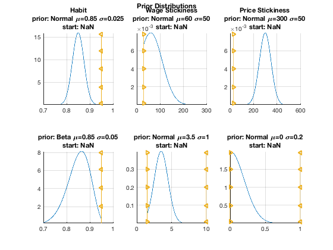
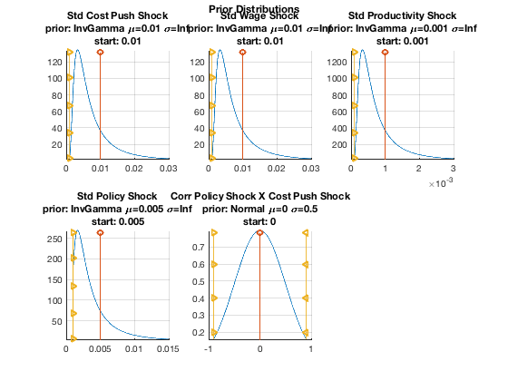
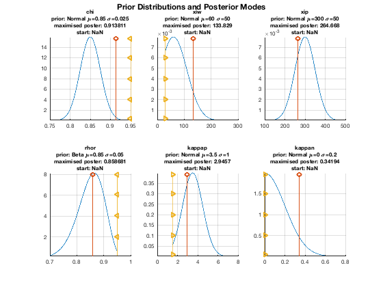
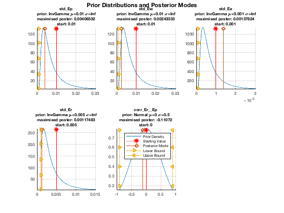
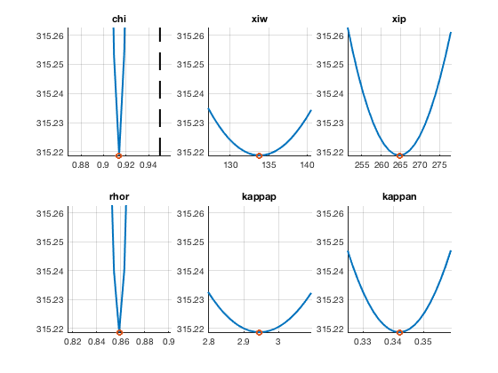
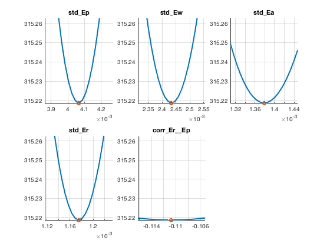
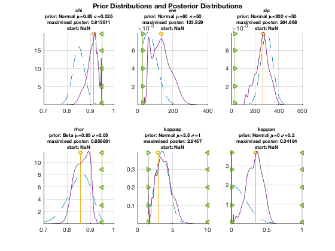
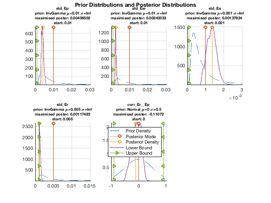

Run Bayesian Parameter Estimation
Use bayesian methods to estimate some of the parameters. First, set up our priors about the individual parameters, and locate the posterior mode. Then, run a posterior simulator (adaptive random-walk Metropolis) to obtain the whole distributions of the parameters.
Contents
- Dependencies
- Clear Workspace
- Load Solved Model Object and Historical Database
- Set Up Estimation Input Structure
- Visualize Prior Distributions
- Maximize Posterior Distribution to Locate Its Mode
- Print Some Estimation Results
- Visualize Prior Distributions and Posterior Modes
- Examine Neighbourhood Around Optimum
- Run Metropolis Random Walk Posterior Simulator
- Visualize Priors and Posteriors
- Save Model Object with Estimated Parameters
- Show Variables and Objects Created in This File
Dependencies
Run the following m-files before this one:
Clear Workspace
Clear workspace, close all graphics figures, clear command window, and check the IRIS version.
clear close all clc irisrequired 20180131
Load Solved Model Object and Historical Database
Load the solved model object built read_model, and the historical database and dates created in read_data.
load mat/read_model.mat m load mat/read_data.mat d startHist endHist
Set Up Estimation Input Structure
The estimation input struct describes which parameters to estimate and how to estimate them. A struct needs to be created with one field for each parameter that is to be estimated. Each parameter can be then assigned a cell array with up to four pieces of information:
estimSpecs.parameter_name = {start}
estimSpecs.parameter_name = {start, lower}
estimSpecs.parameter_name = {start, lower, upper}
estimSpecs.parameter_name = {start, lower, upper, dist}where start is a starting value for the iteration, lower and upper are the lower and upper bounds, respectively, and dist is a distribution object to specify the prior distribution on that parameter.
If the starting value is NaN, then the currently assigned parameter value (from the model object) is used. The constants -Inf and Inf can be used for the lower and upper bounds, respectively.
estimSpecs = struct( );
estimSpecs.chi = {NaN, 0.5, 0.95, distribution.Normal.fromMeanStd(0.85, 0.025)};
estimSpecs.xiw = {NaN, 30, 1000, distribution.Normal.fromMeanStd(60, 50)};
estimSpecs.xip = {NaN, 30, 1000, distribution.Normal.fromMeanStd(300, 50)};
estimSpecs.rhor = {NaN, 0.10, 0.95, distribution.Beta.fromMeanStd(0.85, 0.05)};
estimSpecs.kappap = {NaN, 1.5, 10, distribution.Normal.fromMeanStd(3.5, 1)};
estimSpecs.kappan = {NaN, 0, 1, distribution.Normal.fromMeanStd(0, 0.2)};
estimSpecs.std_Ep = {0.01, 0.001, 0.10, distribution.InvGamma.fromMeanStd(0.01, Inf)};
estimSpecs.std_Ew = {0.01, 0.001, 0.10, distribution.InvGamma.fromMeanStd(0.01, Inf)};
estimSpecs.std_Ea = {0.001, 0.0001, 0.01, distribution.InvGamma.fromMeanStd(0.001, Inf)};
estimSpecs.std_Er = {0.005, 0.001, 0.10, distribution.InvGamma.fromMeanStd(0.005, Inf)};
estimSpecs.corr_Er__Ep = {0, -0.9, 0.9, distribution.Normal.fromMeanStd(0, 0.5)};
disp(estimSpecs)
chi: {[NaN] [0.5000] [0.9500] [1x1 distribution.Normal]}
xiw: {[NaN] [30] [1000] [1x1 distribution.Normal]}
xip: {[NaN] [30] [1000] [1x1 distribution.Normal]}
rhor: {[NaN] [0.1000] [0.9500] [1x1 distribution.Beta]}
kappap: {[NaN] [1.5000] [10] [1x1 distribution.Normal]}
kappan: {[NaN] [0] [1] [1x1 distribution.Normal]}
std_Ep: {1x4 cell}
std_Ew: {1x4 cell}
std_Ea: {1x4 cell}
std_Er: {1x4 cell}
corr_Er__Ep: {[0] [-0.9000] [0.9000] [1x1 distribution.Normal]}
Visualize Prior Distributions
The function plotpp( ) plots the prior distributions (this function can also plot the priors together with posteriors obtained from a posterior simulator; see below). To control the appearance and graphics properties of the various plots included in the graphs, use either the options Figure=, Axes=, Title=, PlotPrior=, PlotInit=, PlotMode=, PlotPoster=, PlotBounds=, or alternatively the standard Matlab function set( ) with the graphics handles returned in the struct h.
c = autocaption(m, estimSpecs, '$descript$'); [~, ~, h] = plotpp(estimSpecs, [ ], [ ], ... 'Subplot=', [2, 3], 'Caption=', c); ftitle(h.figure, 'Prior Distributions'); 
Maximize Posterior Distribution to Locate Its Mode
The main output arguments are the following (these remain the same whatever the set-up of the estimation):
- summary -- Table with final estimates and other kinds of information on parameter estimates.
- pos -- Initialized posterior simulator object. The object pos will be used later in this file to run a posterior simulator.
- C -- Covariance matrix of the parameter estimates based on the asymptotical hessian of the posterior density at its mode.
- H -- Cell array 1-by-2: H{1} is the hessian of the objective function returned by the Optim Tbx (should be close to C); H{2} is a diagonal matrix with the contributions of the priors to the total hessian.
- mest -- Model object with the new estimated parameters.
- v -- Estimate of the common variance factor (only with the option Relative=true, which is the default setting); all the std dev of all shocks are multiplied automatically by the square root of this number.
- delta -- Estimates of the deterministic trend parameters estimated by concentrating them out of the likelihood function.
filterOpt = { ...
'OutOfLik=', {'Short_', 'Infl_', 'Growth_', 'Wage_'}, ...
'Relative=', true, ...
'InitUnit=', 'ApproxDiffuse', ...
};
optimSet = { ...
'MaxFunEvals=', 10000, ...
'MaxIter=', 100, ...
};
[summary, pos, C, H, mest, v, delta, Pdelta] = ...
estimate(m, d, startHist:endHist, estimSpecs, ...
'Filter=', filterOpt, 'Summary=', 'Table'); %, 'OptimSet=', optimSet);
Max Line search Directional First-order
Iter F-count f(x) constraint steplength derivative optimality Procedure
0 12 409.27 0
1 26 390.185 0 0.25 -138 2.58e+04
2 39 354.693 0 0.5 -43.3 9.24e+03
3 52 340.247 -0.00075 0.5 -46.9 4.91e+03
4 66 336.37 -0.0005625 0.25 -20.9 1.57e+04
5 84 335.998 -0.0005537 0.0156 -44.2 7.07e+03
6 101 335.576 -0.0009188 0.0312 -30.9 3.65e+03
7 115 329.149 -0.0007088 0.25 -19.2 5.64e+03
8 129 328.623 -0.001072 0.25 -14.8 1.01e+04
9 143 326.322 -0.0008042 0.25 -16.8 5.56e+03
10 158 324.626 -0.0007123 0.125 -10.4 9.42e+03
11 174 324.241 -0.0007027 0.0625 -4.7 5.83e+03
12 188 323.447 -0.000527 0.25 -13.3 5.52e+03
13 203 322.675 -0.0004611 0.125 -5.31 4.9e+03
14 217 320.277 -0.0003458 0.25 -11.6 3.99e+03
15 233 320.093 -0.0005074 0.0625 -5.09 4.57e+03
16 247 319.13 -0.0003805 0.25 -4.71 3.24e+03
17 262 318.621 -0.000333 0.125 -12.2 928
18 277 318.388 -0.0002913 0.125 -3.1 2.41e+03
19 292 318.01 -0.0002549 0.125 -1.59 3.85e+03
20 309 317.983 -0.0002476 0.0312 -0.985 1.7e+03
21 323 317.955 -0.0001857 0.25 -0.578 2.86e+03
22 338 317.9 -0.0002202 0.125 -2.03 3e+03
23 356 317.89 -0.0002369 0.0156 -1.05 2.48e+03
24 369 317.73 -0.0002222 0.5 -9.07 440
25 381 317.702 -0.0002149 1 -0.662 260
26 393 317.694 -0.0002205 1 -0.0998 95.7
27 405 317.66 -0.0002254 1 -0.0743 626
28 417 317.556 -0.0002383 1 -0.0628 1.69e+03
29 429 317.329 -0.0002534 1 -0.0549 3.02e+03
30 441 316.881 -0.0002679 1 -0.0507 4.26e+03
31 453 316.22 -0.0002617 1 -0.0471 4.46e+03
32 465 315.582 -0.0002197 1 -0.0421 2.79e+03
33 477 315.346 -0.000181 1 -0.0291 788
34 489 315.31 -0.0001795 1 -0.0195 207
35 501 315.308 -0.0001765 1 -0.0115 25.7
36 513 315.307 -0.0001779 1 -0.00199 8.88
37 525 315.307 -0.0001778 1 -0.00152 6.86 Hessian modified
38 537 315.306 -0.0001775 1 -0.00211 71.4 Hessian modified
39 549 315.305 -0.0001771 1 -0.00261 119 Hessian modified
40 561 315.301 -0.0001763 1 -0.0037 210 Hessian modified
41 573 315.293 -0.000175 1 -0.00454 316
42 585 315.275 -0.0001733 1 -0.00515 438
43 597 315.248 -0.0001721 1 -0.00522 466
44 609 315.227 -0.0001725 1 -0.00494 284
45 621 315.22 -0.0001739 1 -0.00421 73.7
46 633 315.219 -0.0001747 1 -0.00129 4.77
47 645 315.219 -0.0001748 1 -0.000149 2.15
Local minimum possible. Constraints satisfied.
fmincon stopped because the predicted change in the objective function
is less than the selected value of the function tolerance and constraints
are satisfied to within the default value of the constraint tolerance.
No active inequalities.
Print Some Estimation Results
summary disp('Common variance factor'); v disp('Out-of-lik parameters'); delta disp('Parameters in the estimated model object'); disp('Std deviations adjusted for the common variance factor'); get(mest, 'parameters')
summary =
11x10 table
Poster_Mode Poster_Std Prior_Distrib Prior_Mean Prior_Mode Prior_Std Lower_Bound Upper_Bound Info_from_Data Start
___________ __________ _____________ __________ __________ _________ ___________ ___________ ______________ _____
chi 0.91381 0.017262 'Normal' 0.85 0.85 0.025 0.5 0.95 0.52326 0.85
xiw 133.83 37.453 'Normal' 60 60 50 30 1000 0.43892 60
xip 264.67 45.064 'Normal' 300 300 50 30 1000 0.1877 300
rhor 0.85868 0.020814 'Beta' 0.85 0.86458 0.05 0.1 0.95 0.83461 0.85
kappap 2.9457 0.88889 'Normal' 3.5 3.5 1 1.5 10 0.20987 3.5
kappan 0.34194 0.071965 'Normal' 0 0 0.2 0 1 0.87053 0
std_Ep 0.004065 0.00041237 'InvGamma' 0.01 0.0033333 Inf 0.001 0.1 0.98021 0.01
std_Ew 0.0024333 0.00030692 'InvGamma' 0.01 0.0033333 Inf 0.001 0.1 0.9167 0.01
std_Ea 0.0013782 0.00028502 'InvGamma' 0.001 0.00033333 Inf 0.0001 0.01 1.0663 0.001
std_Er 0.0011748 0.00014282 'InvGamma' 0.005 0.0016667 Inf 0.001 0.1 0.91741 0.005
corr_Er__Ep -0.11072 0.12333 'Normal' 0 0 0.5 -0.9 0.9 0.93916 0
Common variance factor
v =
0.6255
Out-of-lik parameters
delta =
struct with fields:
Short_: -3.9012
Infl_: -0.3539
Growth_: 0.0078
Wage_: -1.9244
Parameters in the estimated model object
Std deviations adjusted for the common variance factor
ans =
struct with fields:
alpha: 1.0074
beta: 0.9962
gamma: 0.6000
delta: 0.0300
k: 10
pi: 1.0062
eta: 6
psi: 0.2500
chi: 0.9138
xiw: 133.8286
xip: 264.6679
rhoa: 0.9000
rhor: 0.8587
kappap: 2.9457
kappan: 0.3419
Short_: -3.9012
Infl_: -0.3539
Growth_: 0.0078
Wage_: -1.9244
std_Mp: 0
std_Mw: 0
std_Ey: 0.0079
std_Ep: 0.0032
std_Ea: 0.0011
std_Er: 9.2918e-04
std_Ew: 0.0019
corr_Ep__Er: -0.1107
Visualize Prior Distributions and Posterior Modes
Use the function plotpp( ) again supplying now the struct summary with the estimated posterior modes as the second input argument. The posterior modes are added as stem graphs, and the estimated values are included in the graph titles.
[pr, po, h] = plotpp(estimSpecs, summary, [ ], ... 'Title=', {'FontSize=', 8}, ... 'Axes=', {'FontSize=', 8}, ... 'PlotInit=', {'Color=', 'red', 'Marker=', '*'}, ... 'Subplot=', [2, 3]); %#ok<ASGLU> ftitle(h, 'Prior Distributions and Posterior Modes'); legend('Prior Density', 'Starting Value', 'Posterior Mode', ... 'Lower Bound', 'Upper Bound'); 
Examine Neighbourhood Around Optimum
The function neighbourhood( ) evaluates the posterior density (accessible through the poster object pos) at a number of points around the optimum for each parameter. In the code below, each parameter estimate is examined within the range of +/- 5 % of the posterior mode (i.e., 0.95 : 0.01 : 1.05 times the value of the estimate).
The function plotneigh( ) then visualize the local behaviour of both the overall objective funtion (minus log posterior density) and the data likelihood (minus log likelihood). Note that the likelihood curve is shifted up or down by an arbitrary constant to make it fit in the graph.
The option LinkAxes= makes the y-axes identical in all graphs to help compare the curvature of the posterior density around the individual parameter estimates. This indicates the degree of identification.
n = neighbourhood(mest, pos, 0.95:0.005:1.05, ... 'Progress=', true, 'Plot=', false) plotneigh(n, 'LinkAxes=', true, 'Subplot=', [2, 3], ... 'PlotObj=', {'LineWidth=', 2}, ... 'PlotEst=', {'Marker=', 'o', 'LineWidth=', 2}, ... 'PlotBounds=', {'LineStyle', '--', 'LineWidth', 2});
[--IRIS model.neighbourhood progress-----]
[****************************************]
n =
struct with fields:
chi: {[21x1 double] [21x2 double] [1x4 double]}
xiw: {[21x1 double] [21x2 double] [133.8286 315.2187 30 1000]}
xip: {[21x1 double] [21x2 double] [264.6679 315.2187 30 1000]}
rhor: {[21x1 double] [21x2 double] [1x4 double]}
kappap: {[21x1 double] [21x2 double] [2.9457 315.2187 1.5000 10]}
kappan: {[21x1 double] [21x2 double] [0.3419 315.2187 0 1]}
std_Ep: {[21x1 double] [21x2 double] [1x4 double]}
std_Ew: {[21x1 double] [21x2 double] [1x4 double]}
std_Ea: {[21x1 double] [21x2 double] [1x4 double]}
std_Er: {[21x1 double] [21x2 double] [1x4 double]}
corr_Er__Ep: {[21x1 double] [21x2 double] [1x4 double]}
  Run Metropolis Random Walk Posterior Simulator
Run 5,000 draws from the posterior distribution using an adaptive version of the random-walk Metropolis algorithm. The number of draws, N=1000, should be obviously much larger in practice (such as 100,000 or 1,000,000). Use then the function stats to calculate some statistics of the simulated parameter chains -- by default, the simulated chains, their means, std errors, high probability density intervals, and the marginal data density are returned. Feel free to change the list of requested characteristics; see help on poster/stats for details.
The output argument ar monitors the evolution of the acceptance ratio. The default target acceptance ratio is 0.234 (can be modified using the option TargetAR= in arwm( )), the covariance of the proposal distribution is gradually adapted to achieve this target.
N = 1000 tic; [theta, logpost, ar] = arwm(pos, N, ... 'Progress=', true, 'AdaptScale=', 2, 'AdaptProposalCov=', 1, ... 'BurnIn=', 0.20); toc; disp('Final acceptance ratio'); ar(end) s = stats(pos, theta, logpost)
N =
1000
[--IRIS poster.arwm progress-------------]
[****************************************]
Elapsed time is 10.462221 seconds.
Final acceptance ratio
ans =
0.2580
s =
struct with fields:
chain: [1x1 struct]
mean: [1x1 struct]
std: [1x1 struct]
hist: [1x1 struct]
mdd: -344.2509
Visualize Priors and Posteriors
Because the number of draws from the posterior distribution is very low, N=1000, the posterior graphs are far from being smooth, and may visibly change if another posterior chain is generated.
[pr, po, h] = plotpp(estimSpecs, summary, theta, ... 'PlotPrior=', {'LineStyle=', '--'}, ... 'Title=', {'FontSize=', 8}, ... 'Subplot=', [2, 3]); ftitle(h.figure, 'Prior Distributions and Posterior Distributions'); legend('Prior Density', 'Posterior Mode', 'Posterior Density', ... 'Lower Bound', 'Upper Bound'); 
Save Model Object with Estimated Parameters
save mat/estimate_params.mat mest pos estimSpecs theta logpost
Show Variables and Objects Created in This File
whos
Name Size Bytes Class Attributes C 11x11 968 double H 1x3 3240 cell N 1x1 8 double Pdelta 4x4 1116 namedmat ans 1x2 240 cell ar 1x1000 8000 double c 1x11 1516 cell d 1x1 15480 struct delta 1x1 736 struct endHist 1x1 8 DateWrapper estimSpecs 1x1 7216 struct filterOpt 1x6 1247 cell h 1x1 2128 struct logpost 1x1000 8000 double m 1x1 90932 model mest 1x1 90932 model n 1x1 11528 struct optimSet 1x4 504 cell po 1x1 21920 struct pos 1x1 110114 poster pr 1x1 180400 struct s 1x1 108072 struct startHist 1x1 8 DateWrapper summary 11x10 8059 table theta 11x1000 88000 double v 1x1 8 double